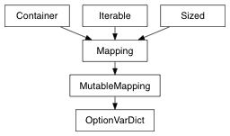

A dictionary-like class for accessing and modifying optionVars.
>>> from pymel.all import *
>>> optionVar['test'] = 'dooder'
>>> optionVar['test']
u'dooder'
>>> if 'numbers' not in env.optionVars:
... optionVar['numbers'] = [1,24,7]
>>> optionVar['numbers'].appendVar( 9 )
>>> numArray = optionVar.pop('numbers')
>>> print numArray
[1L, 24L, 7L, 9L]
>>> optionVar.has_key('numbers') # previous pop removed the key
False